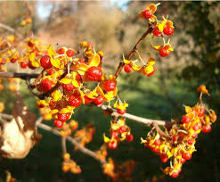

Celastraceae
Bittersweet Family
Celastraceae, the Bittersweet or Staff-vine family, is a large and diverse family of trees, shrubs, and lianas found worldwide (cosmopolitan). Classified in the order Celastrales, members typically possess simple leaves (often opposite), small, inconspicuous 4- or 5-merous flowers featuring a prominent nectar disk, and fruits that are often capsules splitting open to reveal seeds covered in a brightly colored, fleshy aril. The family, as defined by APG, includes genera formerly placed in Hippocrateaceae. Well-known members include ornamental Euonymus (Spindle, Burning Bush) and the climbing vines Celastrus (Bittersweet).
Overview
Celastraceae is the largest family in the order Celastrales, a group within the Fabid clade of Rosids. Comprising about 96 genera and over 1,350 species, the family has a cosmopolitan distribution, occurring in tropical, subtropical, and temperate regions across the globe. Its circumscription has expanded under the APG system to include the formerly recognized family Hippocrateaceae, known for its often 3-staminate flowers.
The family exhibits considerable diversity in habit, including trees, shrubs, and woody vines (lianas). Vegetatively, they usually have simple leaves, often arranged oppositely, and small stipules. Florally, Celastraceae are characterized by small, radially symmetrical flowers, typically with 4 or 5 petals and sepals. A key feature is the presence of a well-developed, fleshy nectar disk located inside the whorl of stamens; the stamens themselves (usually 3-5) are typically inserted on this disk. The ovary is usually superior and often embedded within the disk.
Perhaps the most striking feature for field identification is the fruit and seed morphology of many members. While fruits can be capsules, drupes, berries, or samaras, the seeds are very often partially or wholly covered by a conspicuous, brightly colored (red, orange, pink, yellow), fleshy aril. This aril attracts birds and other animals for seed dispersal, especially when capsules dehisce to expose the colorful seeds. Several species are cultivated ornamentally (Euonymus), used medicinally, or known for toxicity. American Bittersweet (Celastrus scandens) is native to eastern Oklahoma, and various Euonymus species are common landscape plants in areas like Norman, OK.
Quick Facts
- Scientific Name: Celastraceae R.Br.
- Common Name: Bittersweet family (or Staff-vine family)
- Number of Genera: Approximately 96
- Number of Species: Approximately 1,350
- Distribution: Cosmopolitan (worldwide, tropical and temperate)
- Evolutionary Group: Eudicots - Rosids (Fabids / Eurosids I) - Order Celastrales
Key Characteristics
Growth Form and Habit
Diverse habits including trees (small to large), shrubs (often erect or scandent), and woody lianas (vines) that climb by twining or scrambling. Some species may possess thorns or spines.
Leaves
Leaves are usually simple (rarely pinnately compound). Arrangement is variable, frequently opposite or subopposite, but sometimes alternate or spiral. Leaf margins are commonly entire, serrated, or crenated. Stipules are typically present but are usually small, scale-like, and often fall off early (deciduous), sometimes leaving a small scar.
Inflorescence
Inflorescences are typically determinate (cymose), arising either terminally or, more commonly, from leaf axils. They often form branched cymes, simple or compound clusters (fascicles), or thyrses. Occasionally, flowers are borne solitary.
Flowers
Flowers are generally small (often less than 1 cm diameter), inconspicuous, actinomorphic (radially symmetrical), and usually bisexual (perfect), although some species have unisexual flowers (plants then monoecious, dioecious, or polygamous). Flowers are typically 4- or 5-merous.
- Calyx: Consists of 4 or 5 small sepals, typically fused at the base and persistent in fruit.
- Corolla: Consists of 4 or 5 petals that are free (not fused), often spreading or recurved, and typically colored greenish, whitish, yellowish, cream, or sometimes reddish/maroon.
- Nectar Disk: A prominent, fleshy, intrastaminal nectar disk is highly characteristic. It can be annular (ring-shaped), cushion-like, or lobed, and is often brightly colored (yellow, orange, red).
- Androecium: Stamens usually number 3, 4, or 5 (corresponding or alternating with petals, depending on interpretation; sometimes 8 or 10). They are typically inserted on the surface or margin of the nectar disk. Filaments are usually short and distinct; anthers typically dehisce via longitudinal slits. (Genera formerly in Hippocrateaceae often have only 3 stamens).
- Gynoecium: The ovary is usually superior (though sometimes half-inferior or rarely inferior), often partially or wholly embedded within the nectar disk. It is composed of 2 to 5 fused carpels, forming a 2- to 5-locular ovary. Placentation is typically axile, with 1, 2, or sometimes many ovules per locule. A single, usually short style terminates in a capitate or 2- to 5-lobed stigma.
Fruits and Seeds
Fruit morphology is diverse across the family. Common types include a loculicidal or septicidal capsule, which is often lobed, angled, or winged (Euonymus, Celastrus, Maytenus). Other types include fleshy drupes or berries (Maytenus), and winged samaras (Wimmeria). A highly characteristic feature is that the seeds are frequently partially or completely covered by a conspicuous, brightly colored (usually red, orange, yellow, or pink), fleshy or waxy aril. This aril often contrasts sharply with the fruit wall after dehiscence. Seeds contain endosperm, which is typically oily or fleshy.
Chemical Characteristics
Celastraceae often produce a variety of secondary metabolites, including alkaloids (especially sesquiterpene pyridine alkaloids like maytansinoids), triterpenoids (sometimes rubber/gutta-percha), cardiac glycosides, tannins, and flavonoids. Some species are known to be poisonous to humans or livestock if ingested (Euonymus, Celastrus). Catha edulis (Khat) contains stimulating alkaloids (cathinone, cathine).
Field Identification
Identifying members of Celastraceae often relies on a combination of vegetative features, floral characteristics (especially the nectar disk), and particularly the distinctive fruits and arillate seeds.
Primary Identification Features
- Habit: Tree, shrub, or woody vine (liana).
- Simple Leaves: Leaves are typically undivided (simple), arranged oppositely or alternately.
- Small Flowers with Prominent Nectar Disk: Flowers usually small (4-5 parts), but possess a conspicuous, fleshy disk inside the stamens.
- Fruit Often a Capsule: Many common genera have capsules that split open.
- Seeds with Brightly Colored Aril: Seeds exposed after fruit dehiscence are typically covered by a striking red, orange, or pink fleshy aril. This is often the most noticeable feature.
- Superior Ovary (Usually): Ovary positioned above petals/sepals, often embedded in the disk.
Secondary Identification Features
- Stamens 3-5: Inserted on the nectar disk.
- Small Stipules: Often present but may fall off early.
- Axillary or Terminal Cymes: Common inflorescence types.
Seasonal Identification Tips (relevant to Norman, OK)
- Spring/Summer: Observe leaf arrangement (opposite/alternate) and shape. Look for small, often greenish flowers and note the presence of the nectar disk (may require hand lens).
- Late Summer/Fall/Winter: This is often the best time for identification. Look for the characteristic fruits. Capsules of Euonymus and Celastrus split open to reveal the brightly colored arillate seeds. These can be very conspicuous after leaves have fallen, especially the red/orange fruits of Bittersweet vines (Celastrus). The drupes/berries of other genera mature in this period.
Common Confusion Points
- Families with Opposite Simple Leaves: e.g., Cornaceae (Dogwoods - usually lack stipules, different flower structure/fruit), Rubiaceae (Coffee family - have interpetiolar stipules, inferior ovary), Caprifoliaceae sensu lato (Honeysuckle family - often zygomorphic flowers, inferior ovary). None typically combine the prominent nectar disk with brightly arillate seeds in a capsule.
- Families with Arillate Seeds: e.g., Sapindaceae (Soapberry family - usually have compound leaves, different flower structure), Fabaceae (Legume family - distinct legume fruit, different flowers).
- Families with Prominent Nectar Disks: e.g., Rhamnaceae (Buckthorns - flowers often different structure, fruit usually a drupe, seeds not typically arillate in the same way), Vitaceae (Grapes - tendrils, different flowers/fruit).
Field Guide Quick Reference
Look For:
- Tree, shrub, or liana habit
- Simple leaves (often opposite)
- Small 4-5 merous flowers
- Prominent Nectar Disk
- Ovary superior (usually)
- Fruit often a capsule (also drupe/berry)
- Seeds with bright fleshy Aril
Key Variations:
- Leaf arrangement: Opposite vs. Alternate
- Stamen number (3-5)
- Fruit type (Capsule, Drupe, Berry, Samara)
- Aril color and extent
- Habit (erect vs. climbing)
Notable Examples
Celastraceae includes many genera known for ornamental value, medicinal uses, or distinctive fruits.

Euonymus species
Spindle, Burning Bush, Wahoo
A large genus of shrubs, small trees, and sometimes vines, mostly from the Northern Hemisphere. Typically have opposite leaves, 4- or 5-merous flowers. Known for their often brightly colored, lobed capsular fruits that split open to reveal seeds covered in fleshy orange or red arils. Many species (E. alatus - Burning Bush, E. fortunei - Wintercreeper) are popular ornamentals, valued for fall color or evergreen foliage.

Celastrus species
Bittersweet, Staff-vine
Woody climbing vines (lianas) found in Asia and North America. Leaves are alternate. Plants are typically dioecious (separate male/female). The fruit is a distinctive globose capsule, usually orange or yellow, that splits open into 3 valves revealing seeds completely covered by a fleshy, bright red or orange aril. The fruiting branches are decorative. C. scandens (American Bittersweet) is native to eastern North America (including eastern OK), while C. orbiculatus (Oriental Bittersweet) is an invasive species in many areas.

Celastrus Fruit Detail
Bittersweet Fruit
The characteristic fruit of Celastrus is a capsule (often yellow/orange) that splits into three parts upon ripening. This reveals the seeds inside, each completely enveloped in a bright red or orange, fleshy aril, making them highly attractive to birds for dispersal.

Maytenus species (incl. Gymnosporia)
Mayten, Spike Thorn
A large and complex genus (sometimes split) of evergreen or deciduous shrubs and trees, found widely in tropical and subtropical regions. Leaves often alternate (sometimes opposite), some species thorny. Flowers are small. Fruit is typically a leathery or woody capsule, dehiscing to show 1-4 seeds usually with a fleshy aril (can be white, yellow, orange, red). Some species have medicinal uses.

Catha edulis
Khat, Qat
An evergreen shrub or small tree native to the Horn of Africa and the Arabian Peninsula. Leaves are typically opposite or subopposite. It is widely cultivated in these regions for its leaves and young shoots, which contain stimulating alkaloids (cathinone and cathine) and are chewed socially as a stimulant. Its cultivation and use are culturally significant but also controversial.
Phylogeny and Classification
Celastraceae is the core family of the order Celastrales. This order is part of the large Fabid clade (Eurosids I) within the Rosids. Molecular phylogenetic studies place Celastrales often near the orders Oxalidales and Malpighiales, sometimes collectively referred to as the "COM" clade, indicating a shared ancestry among these three diverse orders.
The circumscription of Celastraceae itself has been broadened based on molecular data to include genera formerly placed in the family Hippocrateaceae (often characterized by 3 stamens). Other small families, Parnassiaceae (incl. Lepuropetalon), are also placed within Celastrales, making it a relatively small order comprising Celastraceae, Parnassiaceae, and the two-species family Lepidobotryaceae. Celastraceae is by far the largest and most widespread family within the order.
Position in Plant Phylogeny
- Kingdom: Plantae
- Clade: Angiosperms (Flowering plants)
- Clade: Eudicots
- Clade: Rosids (Fabids / Eurosids I)
- Order: Celastrales
- Family: Celastraceae
Evolutionary Significance
Celastraceae demonstrates several interesting evolutionary aspects:
- Habit Diversity: Radiation into trees, shrubs, and successful climbing lianas within a single family lineage.
- Floral Conservatism vs. Fruit Diversity: While flowers are relatively conserved (small, 4-5 merous, nectar disk), fruit types are highly variable (capsule, drupe, berry, samara), indicating diversification in dispersal strategies.
- Seed Dispersal Syndromes: The common evolution of brightly colored, fleshy arils is a strong indicator of adaptation for seed dispersal primarily by birds (ornithochory).
- Nectar Disk Evolution: The prominent nectar disk suggests adaptation to pollination by diverse insects attracted to nectar rewards.
- Phylogenetic Placement: Its position within the COM clade helps understand the broader relationships and evolutionary history of the large Fabid group of Rosids.